Wally’s ocean collection
A complete art set for Wally: a separate text-free 3:1 cover, five painted worlds with baked reflection maps, and a bright branded carton with real opening hinges.
Collection cover
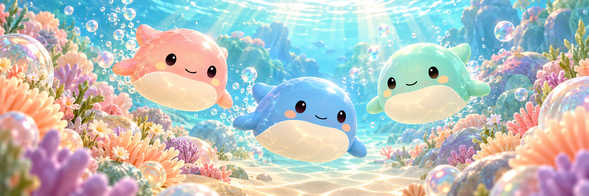
2160 × 720 pixels. No text, logos or overlays in the illustration. Classic Blue, Coral Glitter and Seafoam Wally swim through their ocean home.
Five painted worlds
Each environment is free of toys, with a calm center for play. The paintings also supply the small local reflection maps used on the toys. Open each Unity preview to see Wally in the actual runtime scene.
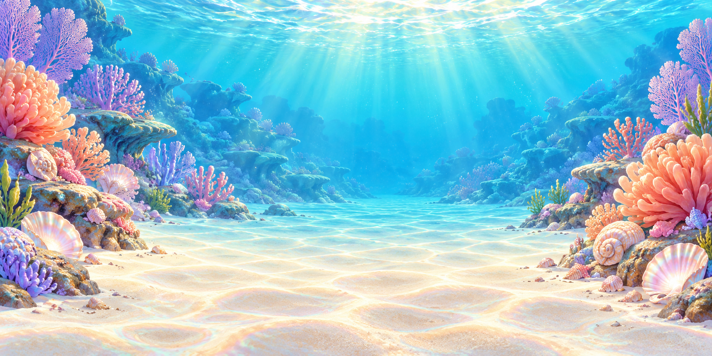
Coral CoveBright turquoise water, peach coral and sunny sand.Unity preview · Classic Blue
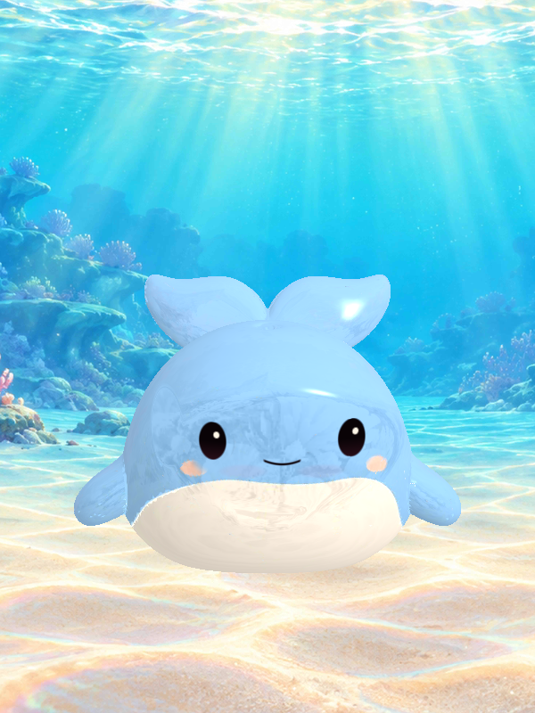
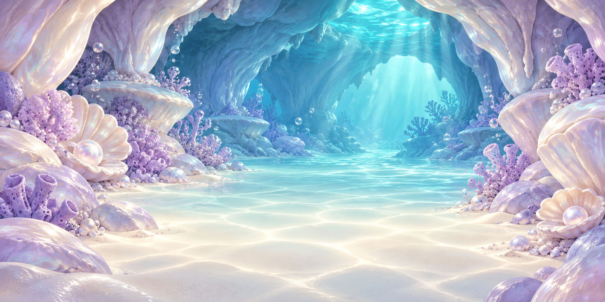
Pearl GrottoLavender shell grotto with cool pearl reflections.Unity preview · Classic Blue
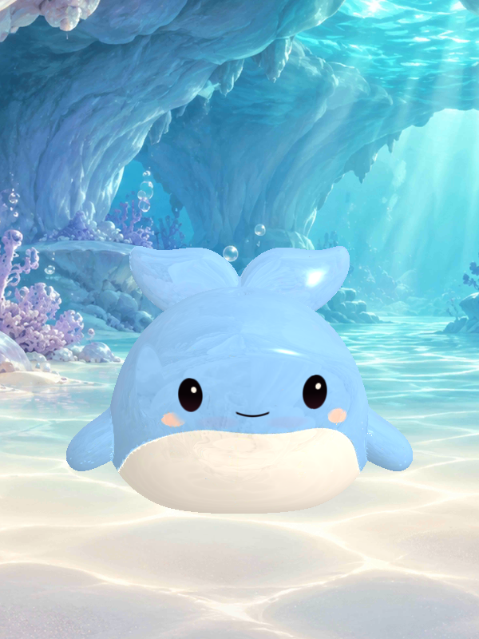
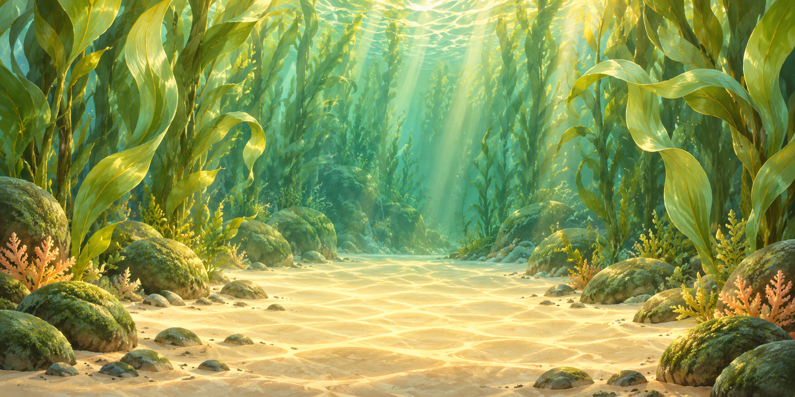
Kelp GardenJade ribbons of kelp and warm golden light.Unity preview · Classic Blue
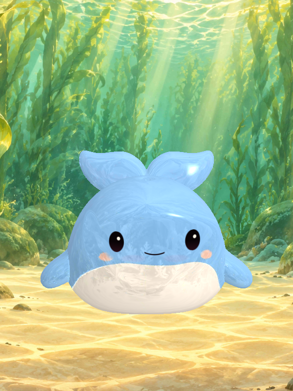
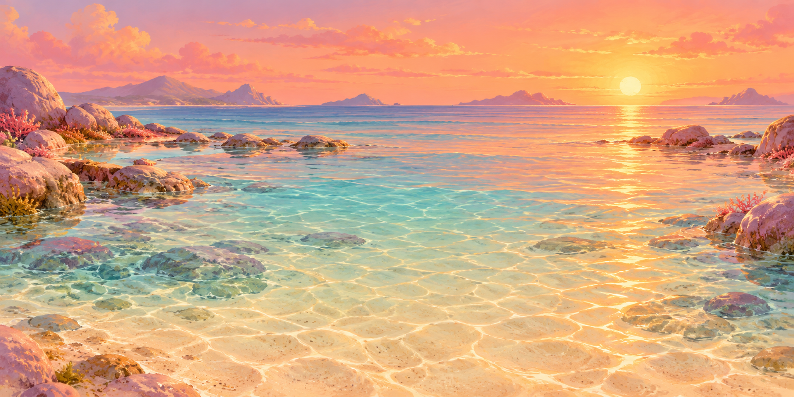
Sunset ShallowsPeach sunset reflected across clear shallow water.Unity preview · Classic Blue
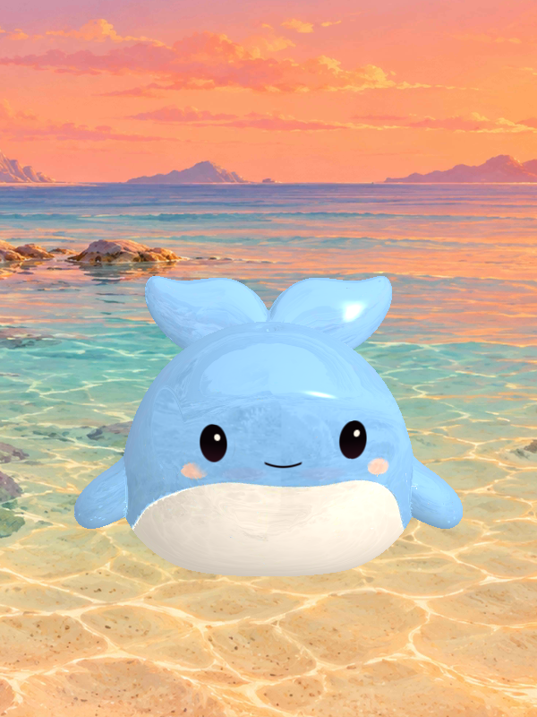
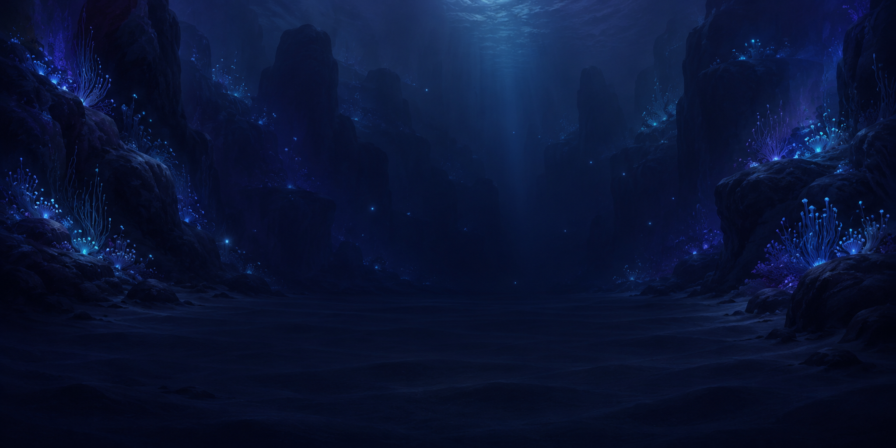
Midnight TrenchDeep navy canyon with restrained cyan bioluminescence.Unity preview · Deep Sea Glow
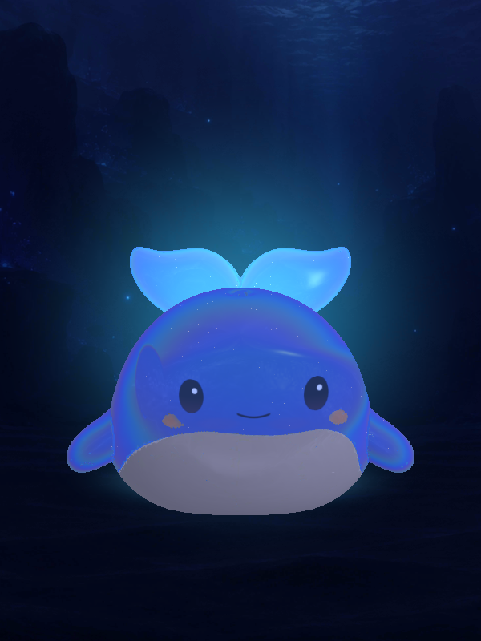
A real surprise carton
Prominent Pockle branding, a mystery whale silhouette and bright ocean print. Closed/open PNGs are transparent renders of this same 874-triangle 3D carton. The native animation opens a lid and two dust flaps.
 Closed · transparent PNG
Closed · transparent PNG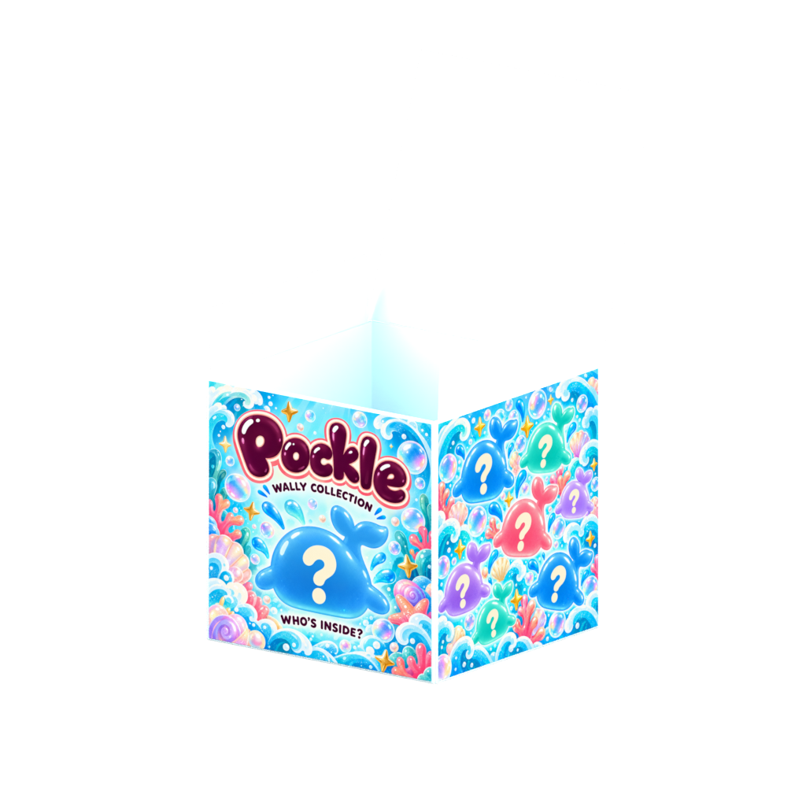
Open · transparent PNG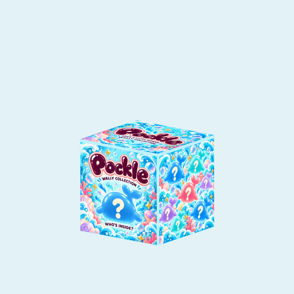
Unity opening animationReal lid and flap hinges; the review holds the carton opaque to show its construction.3D carton GLB · Blender source
Printed packaging panels
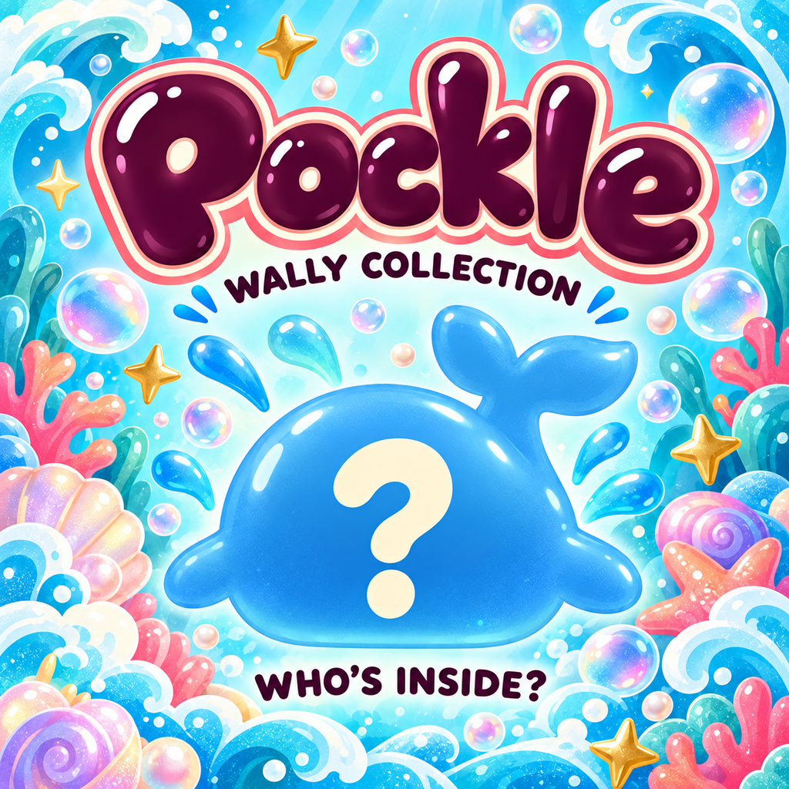
Mystery front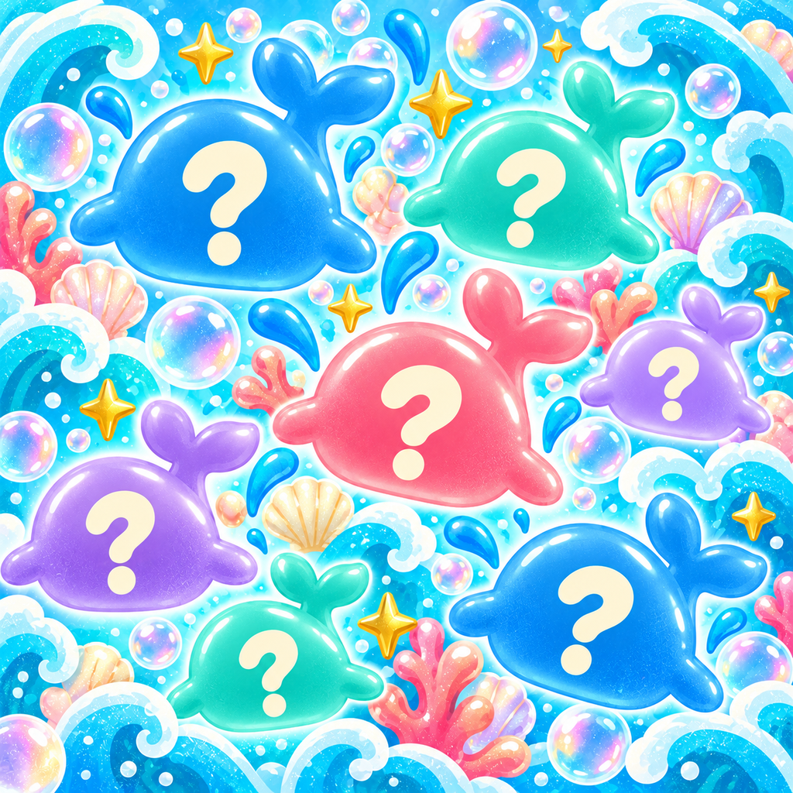
Side and back pattern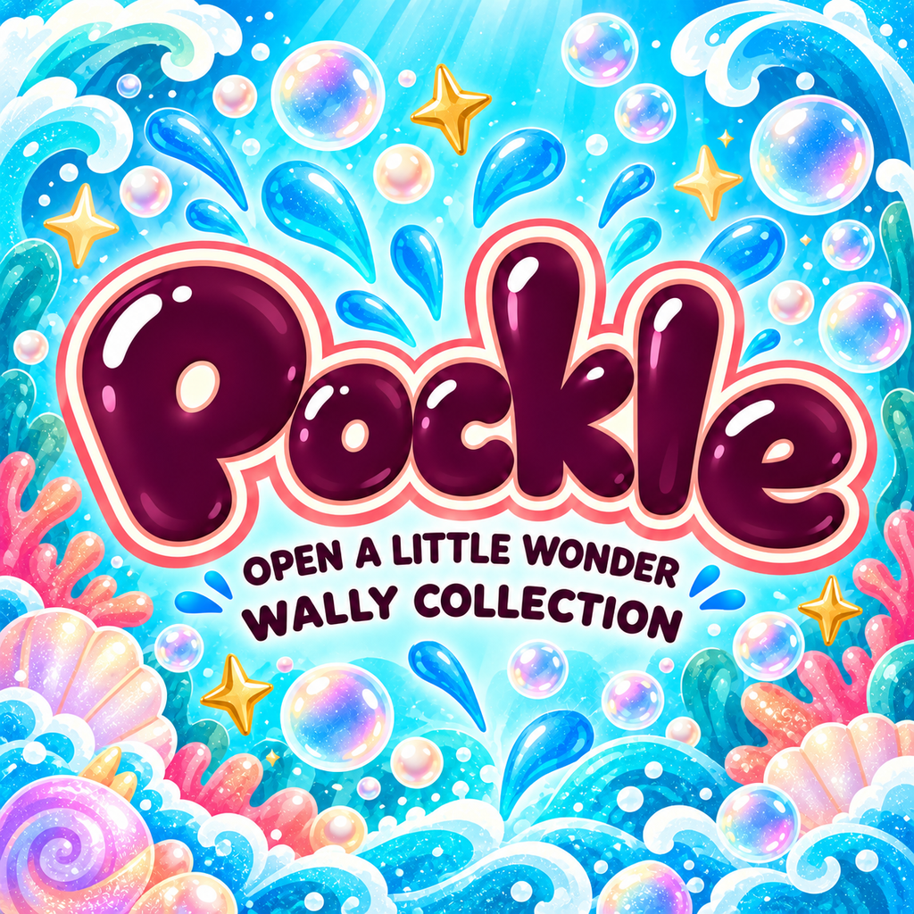
Branded lid